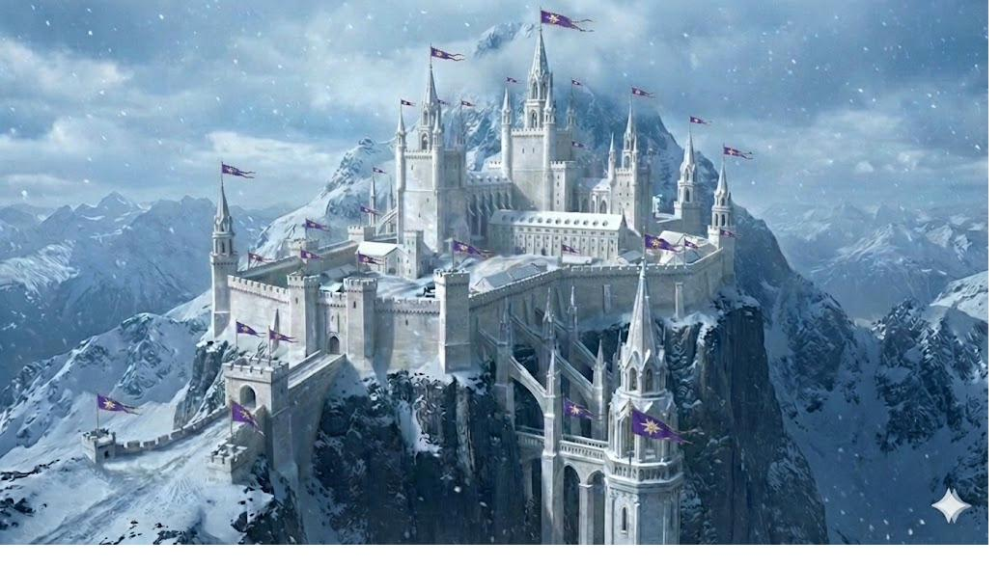
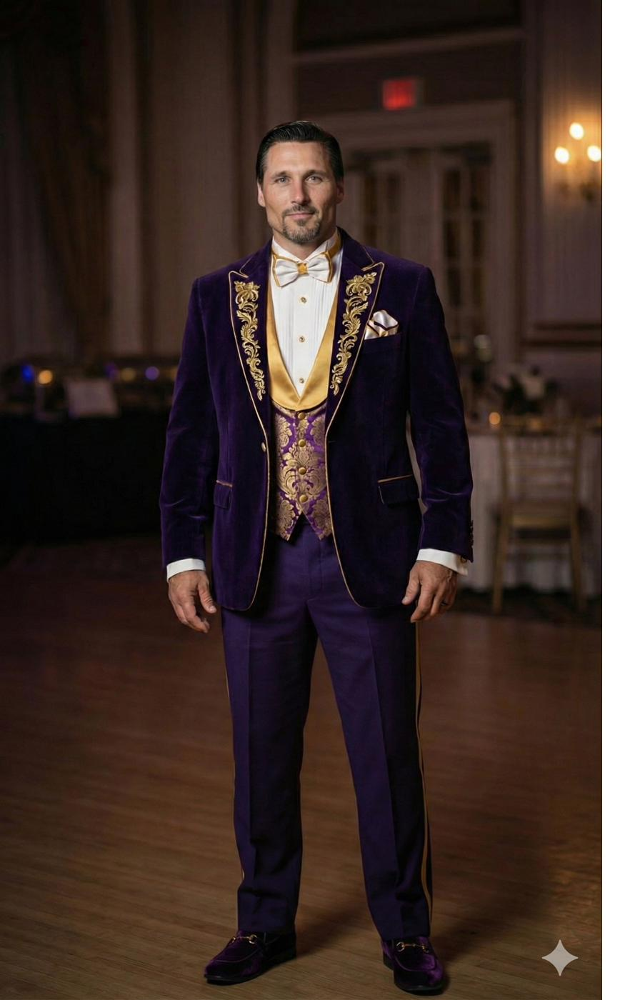
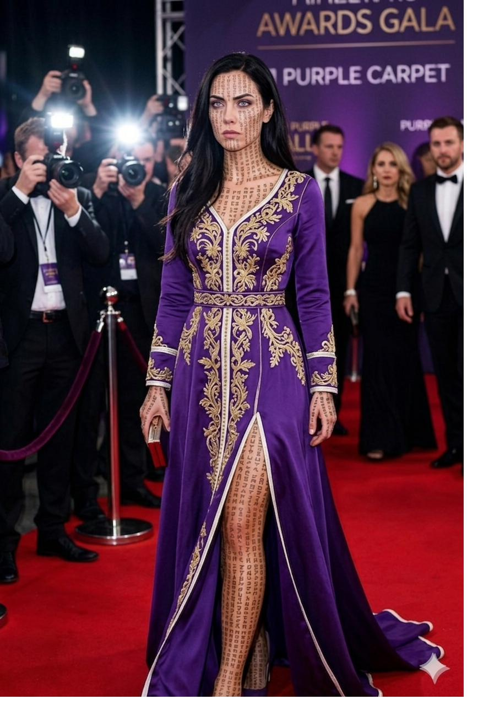
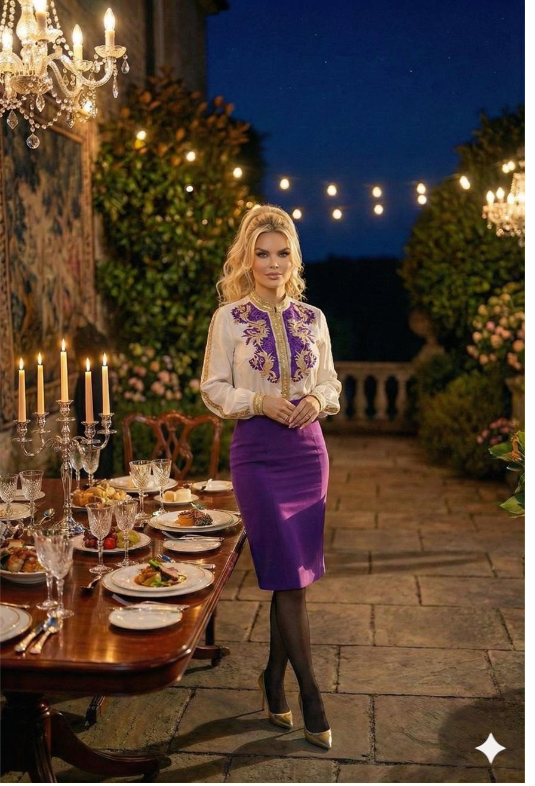
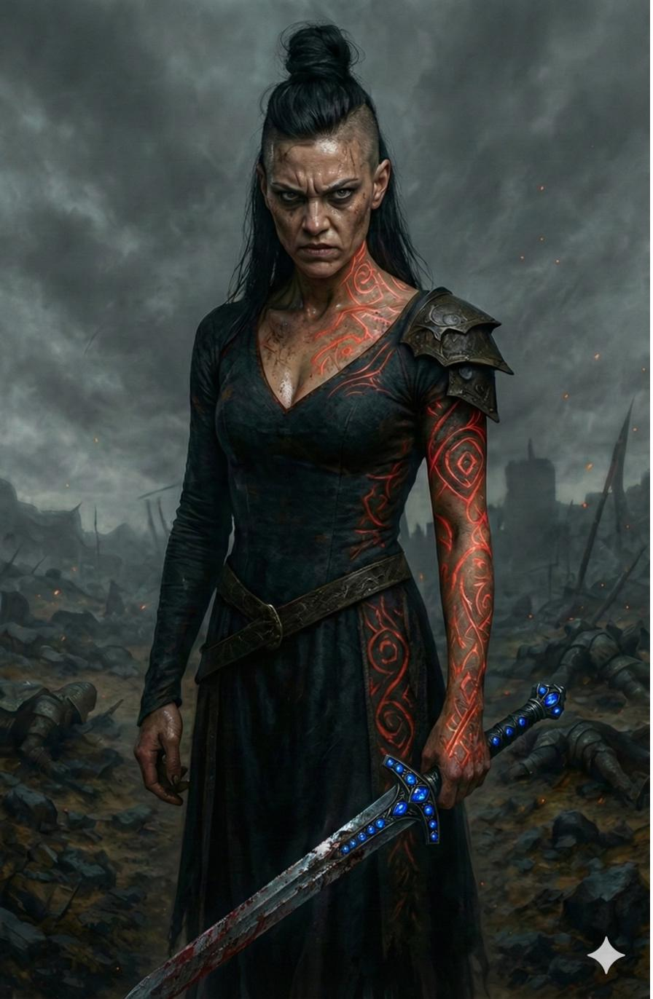
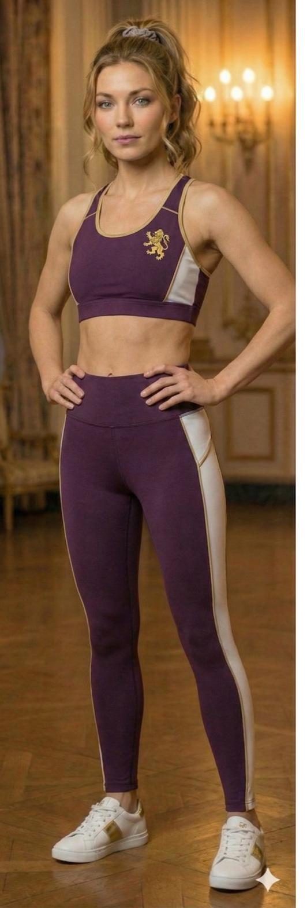
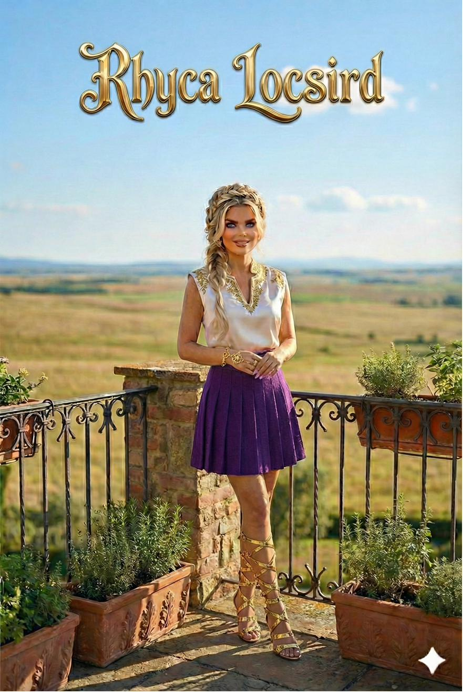
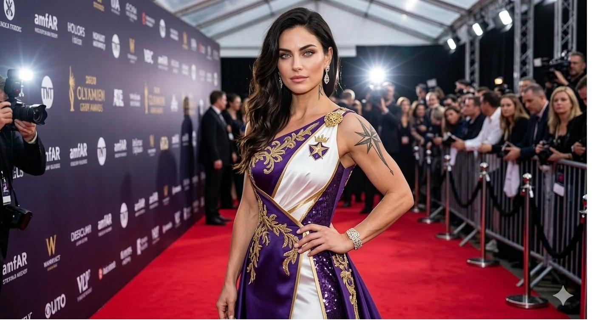
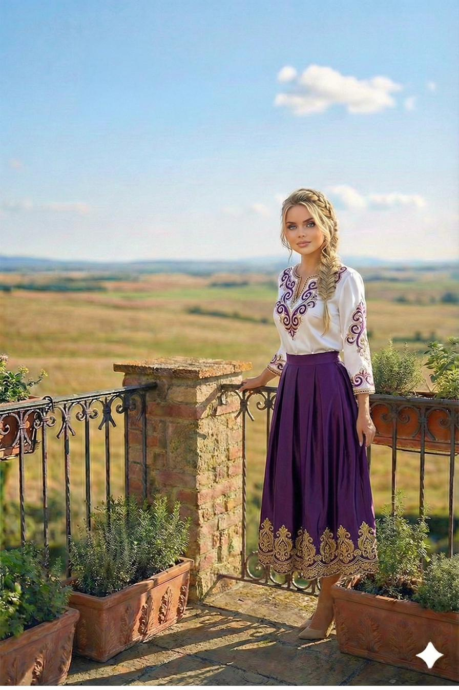
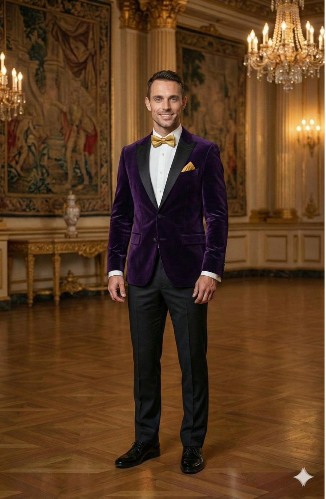

The Lost Prince — Character Encyclopedia
Royal House · Gemstone Fortress · Seat of Gemlyria
Locsird
House Toraiyo
The Crown · The Rebirth · The Bearer
The ruling family of Gemlyria. A King who chose a War Maker. A Queen who was already a Bearer before she crossed the water. And a son returned from the dead who is something the world has no language for yet.

Gemstone Fortress · Seat of the Royal House
House Colors
Imperial Purple · White · Gold
Sigil
The Locsird Star
Seat
Gemstone Fortress
Members
11 · Chronicle One
◆ ◆ ◆
I.
The Family
Select a member to view their full profile.

Jonzhento Locsird
King of Gemlyria
Age 246 · Husband of Sonya-Lee

Sonya-Lee Toraiyo
Queen · War Maker · Bearer
Age 744 · Wife of Jonzhento
† Deceased

Emerald Locsird
Heir Designate · The Second Mother
Age 87 at Death
Ruby Toraiyo
War Maker · Self-Exiled
Age 87 · West Island

Sapphire Toraiyo
War Maker · Antagonist · Missing
Age 87 · Whereabouts Unknown

Ayravelle Locsird
Heir to the Throne
Age 42 · Twin of Sam

Samantha-Lilly Toraiyo
Warrior Princess
Age 42 · Twin of Ayravelle

Rhyca Locsird
Princess · The Warm Constant
Age 39

Mez-tah Toraiyo
Princess · Betrothed to Damon Martial
Age 35

Aurea-Lee Locsird
Princess · The Witness
Age 20

Lessio Locsird
The Rebirth · The Prince
Age 16 · Future: Holly Galmir